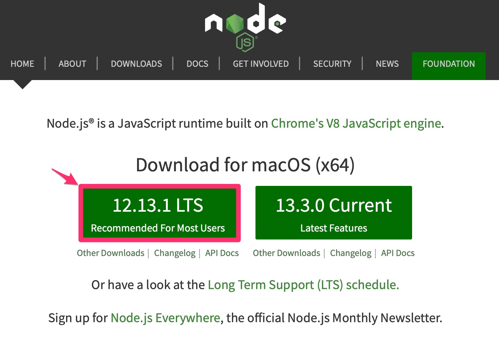

hexo系列-00 hexo簡介＆環境安裝
A fast, simple & powerful blog framework
前言
一直以來就有想要架設個人網站的想法，之前在學寫HTML的時候，有試過用github.io的功能，他可以直接把你寫的網頁直接呈現在外部ip。(在大學的時候有想過用這個功能把專題直接讓每個人玩，不過後來發現，他只能用靜態網頁所以後來就不了了之。)
身為一個懶惰又想要讓自己的網站很炫能看的資訊工程學生，在一看到hexo這個工具，就立刻架設了一個範本，也就是現在你所看到的這個網站，經過研究一段時間後發現，架設這個網站只需要簡單的幾個指令就可以完成，基本上不需要資訊工程或是有編程經驗的背景就可以使用了。
不過要注意的是hexo是一個基於Node.js的靜態blog工具，可以很方便的將生成的網頁直接放在Github上面，不過要注意的是他跟基於PHP的WordPress不一樣，如果你想搭建功能比較複雜的網頁或是WebAPP的話，還是採用動態網站比較好。
之後會慢慢的完善這個網頁，接下來就直接開始介紹怎麼使用hexo這個工具吧～
環境安裝、配置
NodeJS/NPM
NodeJS是能夠在電腦運行JavaScript的開放原始碼，幾本上所有在寫前端的程序猿都會需要使用，安裝方法很簡單，去NodeJS官方網站下載一個LTS的版本就可以了，如果你電腦安裝過了就可以直接跳過。

有許多人在JavaScript上發佈、使用許多模塊，要調用也十分容易，其中NPM是最有名的社群，也是國際上最為流行的Node模塊管理工具，現在的NodeJS已經集成了NPM，所以不需要再去安裝。
Git/Github
去Git官網下載和自己作業系統相對應的安裝包，另外如果沒有Github帳戶的人也需要去申請一個。
另外要記得設定全局變量還有ssh-key
1 | git config --global user.name "Your Github username" |
然後可以在家目錄~/裡面看到.ssh文件夾，在裡面會有id_rsa.pub這個檔案，可以使用pbcopy這個指令來複製key。
1 | pbcopy < ~/.ssh/id_rsa.pub |
然後到Github SSH and GPG keys新增你的key，標題隨意打一個就行，新增完後以後要發文就不需要再輸入Github的密碼了。
Hexo
hexo可以直接使用npm來進行安裝：
1 | npm install hexo-cli -g |
到這邊基本的環境就算安裝完成。
進入你要創建hexo的目錄(建議創建的目錄為XXX.github.io)，接下來初始化hexo的環境：
1 | hexo init XXX.github.io |
到這個步驟你就可以直接用瀏覽器打開localhost:4000(默認的port，也可以用hexo server -p XXXX來指定你的連接埠)，預設的主題是landscape。
到這裡你就可以開始使用你個人的blog了，下一篇會介紹如何更改主題、上傳到Github Page等等。
Hexo建置
在使用的hexo之前，我想各位都已經找到自己感興趣的網站樣板了吧？！(至少我是XD)
如果還沒有開始找想要的樣板也沒關係，這裏列出了很多不同的樣板可以去參考看看。
主題安裝
這裡我挑選的是Icarus作為我的主題，然後直接在~/XXX.github.io這個目錄下面輸入：
1 | git clone https://github.com/ppoffice/hexo-theme-icarus.git themes/icarus |
這樣就可以直接把主題安裝到目錄中的themes資料夾了。
如果在這之前你是使用過hexo的人要轉換主題，你要先執行：
1 | hexo clean |
清除之前主題渲染過內容的檔案，再重新渲染一次才不會有問題。
設置文件
在執行完上面步驟之後，你會在資料夾發現兩個_config.yml，一個在XXX.github.io資料夾內，另一個在剛剛下載的主題內。
接下來將XXX.github.io內的_config.yml打開，將theme改寫成你主題的名字：
1 | theme: icarus |
接著執行選染的指令：
1 | hexo generate |
最後就可以在瀏覽器看結果囉～
1 | hexo server |
預設地址為：http://localhost:4000
新增貼文
接下來是新增貼文，在目錄中使用下面這個指令就可以新增貼文了：
1 | hexo new post 'title' |
然後在XXX.github.io/source/_posts/這資料夾內就會看到剛剛新增的title.md檔案，文章標題默認會和檔案名稱一樣，打開這個md檔長得像這樣：
1 | --- |
這邊就是單純的Markdown語法，無須多說。不過在頂部的設定區有一些有趣的選項，譬如tag, categories, thumbnail, toc，其中thumbnail和toc分別代表的是縮圖跟目錄，可以用以下的方式設定：
1 | --- |
這邊要注意的是圖片的位置，這邊個人建議是在XXX.github.io/public/裡面新增一個資料夾叫做uploads，之後你文章中所使用的任何圖片都可以上傳到這裡在用/uploads/YourImage.JPG的方式指定到目標位置。
當然如果你要建立子資料夾來管理圖片也是可以的，之後文章會介紹post_asset_folder讓圖片可以放在_posts裡面，用文章的名稱來管理用到的圖片。
上傳到Github
前面有申請過Github的帳戶，現在我們要將網站發佈在Github Page上面，首先要做的是打開XXX.github.io下的_config.yml檔案，找到Deployment將其改成像下面這段：
1 | # Deployment |
變更成你的配置，不過不建議在message加上內容，我們可以在後面加上message的訊息，記得要先generate才可以上傳到你的Github帳戶：
1 | hexo generate |
建議在這裡加上附註，因為可以使用一些git的技巧，直接在-m後面加上要傳上去的附註，當然也可以將上傳的時間點加在附註上面，像是這樣的形式：
1 | hexo d -m "Site updated: `date +'%Y-%m-%d %H:%M:%S'`" |
結語
以上就是關於hexo的基本操作方式，接下來會針對_config.yml檔案裡面的參數去做介紹。
hexo系列-00 hexo簡介＆環境安裝